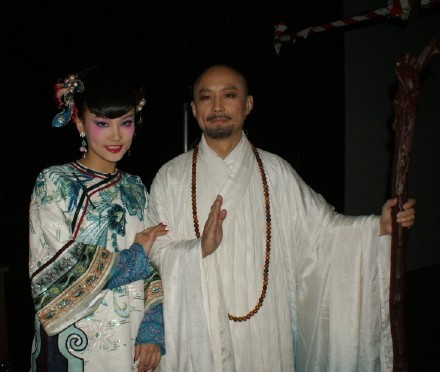
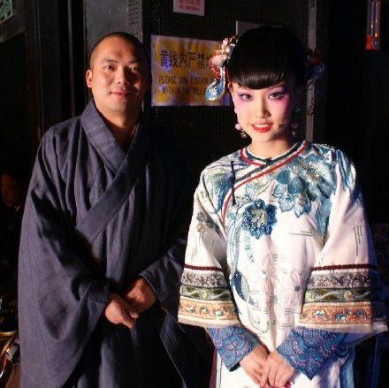
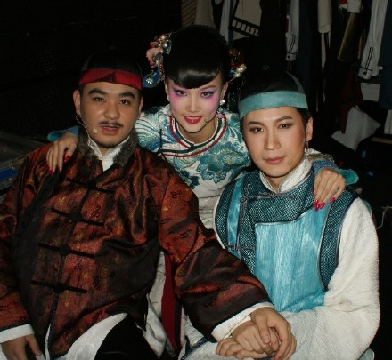
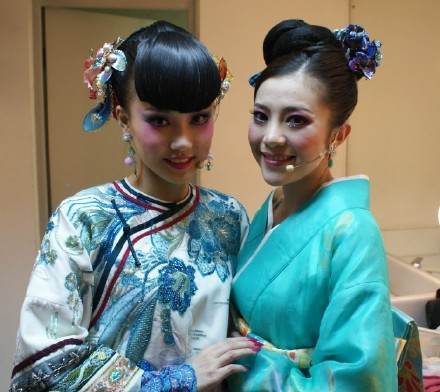
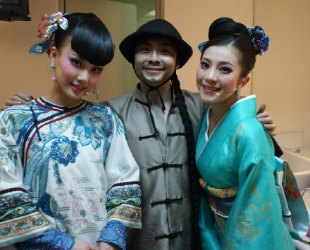
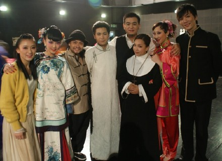

演出已经过半了，这几天非常的快乐，在舞台上穿着华美衣服唱歌表演，在后台和很多的朋友聊天，一起奋斗努力做好一件事情的感觉真好。

宋怀强老师扮演的弘一法师，我是他年轻时候的红颜知己。我们跨越时空相遇了。穿越了！

饰演妙莲的玉佛寺高僧圣净法师，大师真的很谦逊，之前他不愿意拍照，说自己不好看，怕站在我旁边影响了美的东西。但是其实大师一站在台上，大家就会看到美好。

右边就是我爱的李叔同得扮演者姜彬。左边么，是一人分饰两角--富商和夏沔尊的王乐天，可是，你知道他是89年的吗？

扮演叶子的俞越越，唱的超级棒。我们啊，爱上了同一个男人，还能这么好。

中间是无时无刻不在的非常会抢镜and戏份最少扮演小偷的魏诗泉，其实他的本职工作是音乐助理，全才啊！

左边是美丽的舞蹈老师孔令琳。还有颇具歌剧范的凌其尔和旁边的比我还风尘的王赛男！
还有很多没有抓到机会和你们合照。下次再拍！